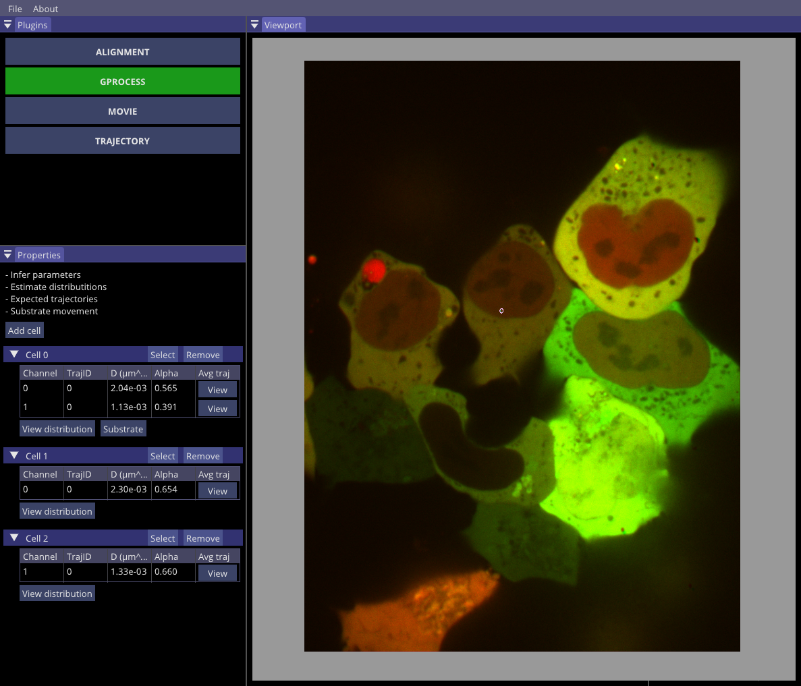
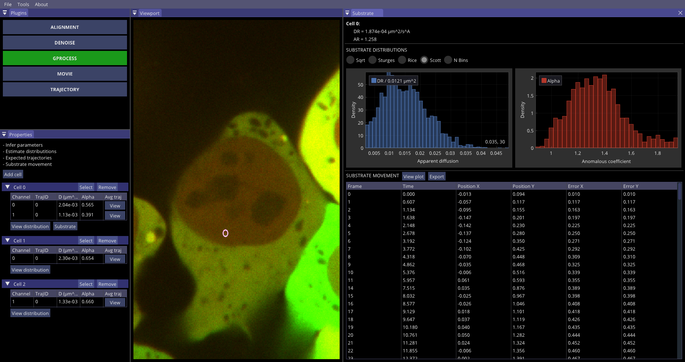
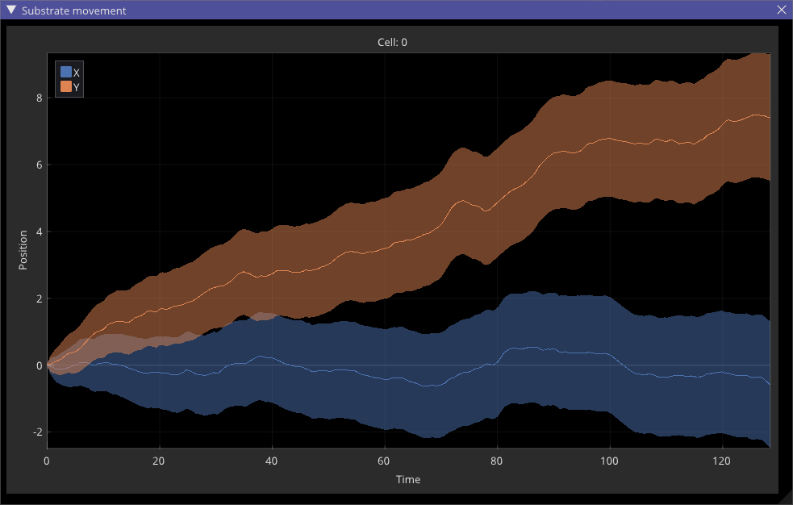
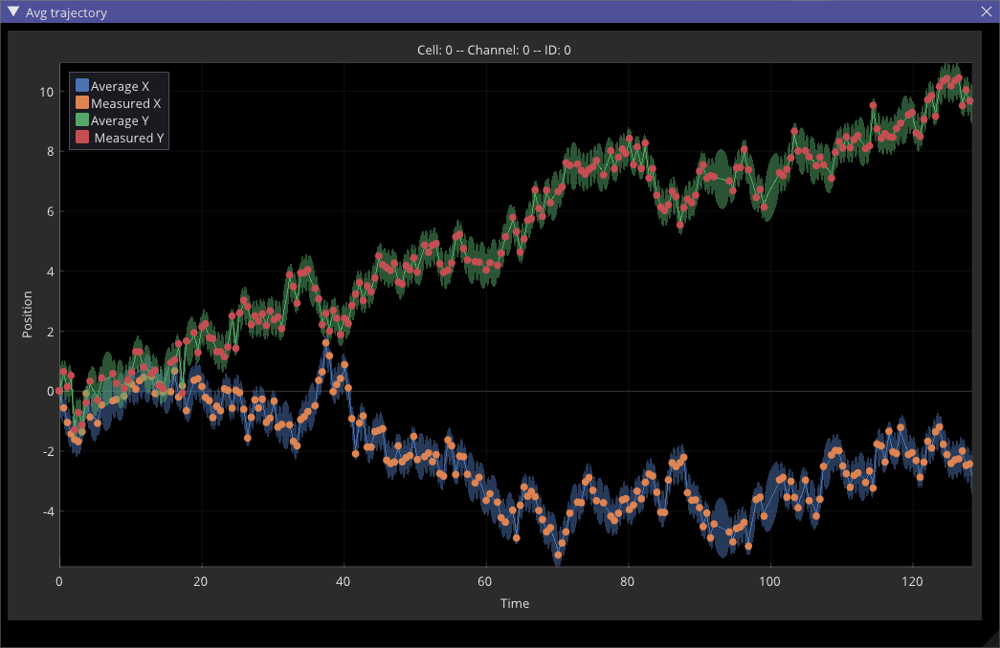
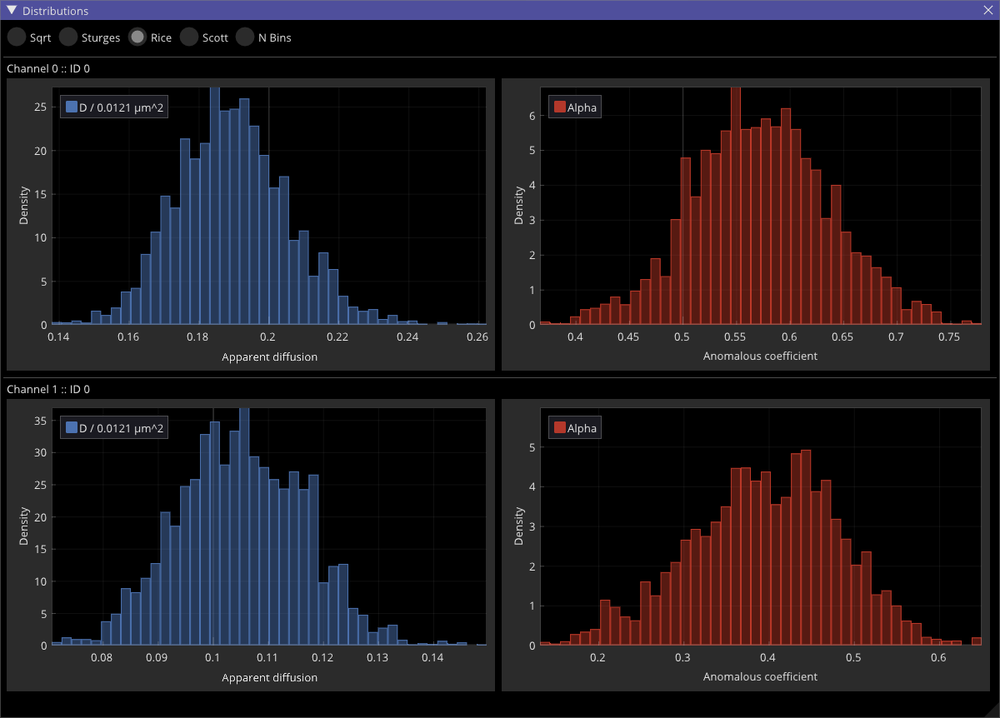

Gaussian process
After all trajectories are imported, it is time to determine the diffusion properties of spots. The user has an option to analyze spots individually, by selecting one spot at the time under Trajectory plugin or to group spots. Once grouped, GP-Tool will assume that all selected spots are under a similar context, hence subject to similar background movement. In that sense, we could, for example, select all the spots in the nucleus of a cell and, like so, filter out the cellular movement from the apparent diffusion and anomalous coeffcients. Differently, by selecting two or more spots close to fluctuating membrane, the dynamics properties inferred will attempt to filter out said fluctuations. In the next image, we first group both spots for a first analysis and, later, treat them independently. Comparing the results, we can observe how background movement affects inferred values.
Evidently, by clicking on the button "Substrate" we are presented with a series of data estimated for the substrate from selected group of trajectories. In the substrate tab, we have inferred apparent diffusion and anomalous coeffcients for the substrate as well as a probability density plot for these parameters. Additionally, GP-FBM will provide an estimation for the trajectory described by the substrate in the form of a table. The user can save this table by clicking in the button "Export" or visualize the data with "View plot", where the trajectory will be displayed with a 95% credible interval.
 As an additional benefit of Gaussian processes, we can use measured spot locations and estimated dynamics parameters to interpolate the position of spots in time within a credible interval. GP-Tool allows the user to observe these curves using button "View" at the column "Average trajectory" in the properties panel. In the following image, points represent measured positions whilst continuous lines and shaded areas correspond to most probable trajectory in time with a 95% credible interval.
Finally, to determine how stable the inference of apparent diffusion and anomalous coeffcients are, the user can consult the probability density function of each parameter estimated via Metropolis-Hastings clicking in the button "View distribution". For convenience, several standard binning methods are provided. Differently, the user can manually select any given number of bins.
